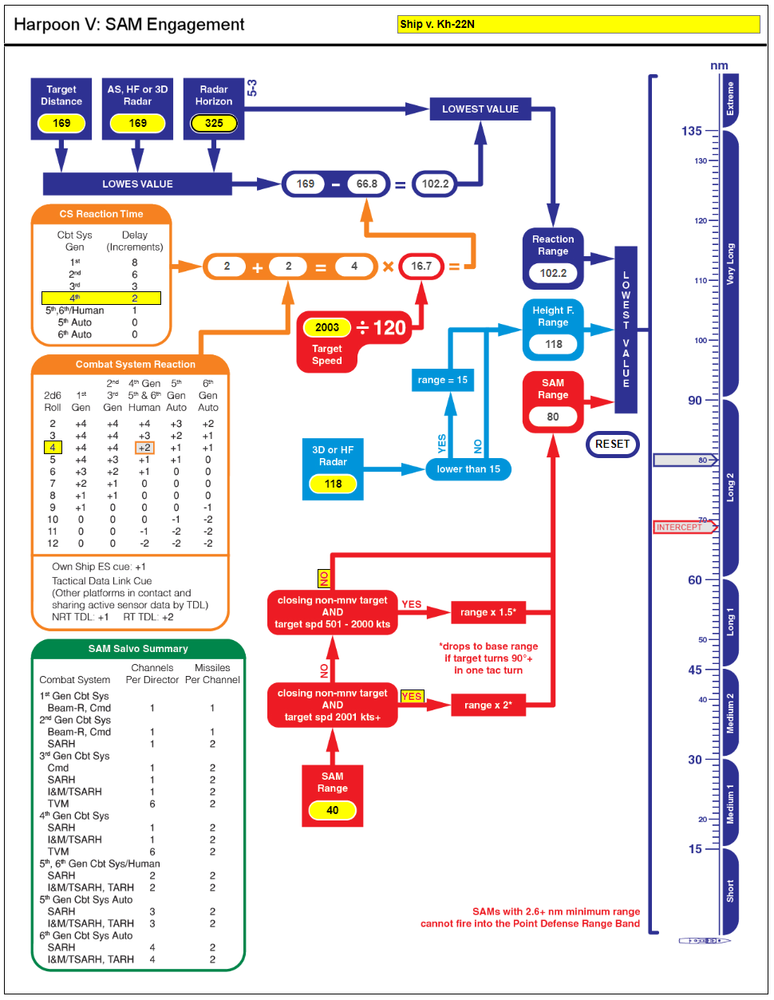

Example for Using the SAM Engagement Flowchart
This example of the SAM Engagement flowchart is a mirror of the example given in Harpoon V rule 8.1.1 Radar-Guided Surface-to-Air Missiles (SAMs).
A ship equipped with SM1ER Blk IV (SARH, range 40 nmi) and a 4th Gen combat system engages an incoming Kh-22N salvo. The ship is also equipped with SPS-49(V)5 AS radar with a detection range of 169 nmi vs. a Small target. The radar horizon for a Medium ship vs. a VHigh target is 325 nmi.
Enter the Target Distance and Radar range (the same at 169 nmi since the target was launched beyond radar range). Enter the Radar Horizon range at 325 nmi.
Select the ship's combat system generation in the CS Reaction Time box. Roll 2d6 for the Combat System Reaction modifier. A 4 is rolled, which adds 2 increments to the base 2 increments for the CS reaction time.
Enter the target speed in knots in the Target Speed box. The speed per increment and the total distance for CS reaction will automatically be computed. This value is then subtracted from the lowest of the radar ranges to get the final reaction range. The lowest value of either the radar horizon or the reaction range (102.2 nmi) is forwarded to the Reaction Range box for later comparison.
Enter the radar range of the SPS-48C 3D of 118 nmi vs. a Small target. Because this is greater than 15 nmi, the full value is used and forwarded to the Height F. Range box for later comparison.
Enter the SAM range of 40 nmi in the SAM Range box. There are two "Yes/No" decisions to make. We are answering Yes for the "closing non-mnv target AND target spd 2001 kts+". This will have the effect of doubling our SAM range. The new range of 80 nmi is forwarded to the SAM Range box for a final comparison.
The lowest value of the Reaction Range, Height F. Range, and the SAM Range will finally determine the maximum range at which the incoming missiles may be engaged. A blue pointer will display the range and band at which this occurs. A red pointer will show the actual range at which an intercept will occur given the target's incremental movement.
You are now ready to "punch the tables" to determine how many SAM interceptions are allowed.
